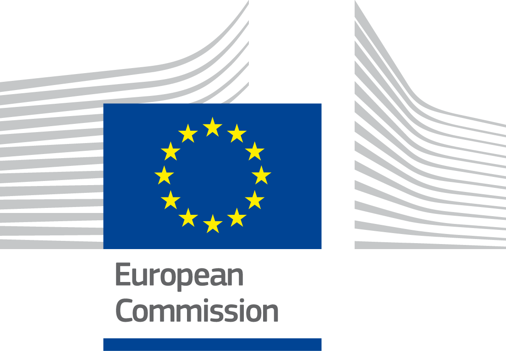

Digital Public Administration factsheet 2021
Sweden
Digital Public Administration factsheet 2021
Table of Contents
2 Digital Public Administration Highlights 11
3 Digital Public Administration Political Communications 14
4 Digital Public Administration Legislation 23
5 Digital Public Administration Governance 29
6 Digital Public Administration Infrastructure 37
7 Cross-border Digital Public Administration Services for Citizens and Businesses 47
Please note that the data collection exercise for the update of the 2021 edition of the Digital Public Administration factsheets took place between March and June 2021. Therefore, the information contained in this document reflects this specific timeframe.
Country
Profile
1
Country Profile
Basic data
Population: 10 353 442 inhabitants (2020)
GDP at market prices: 474 724.4 million Euros (2020)
GDP per inhabitant in PPS (Purchasing Power Standard EU 27=100): 123 (2020)
GDP growth rate: -2.8% (2020)
Inflation rate: 0.7 % (2020)
Unemployment rate: 8.3 % (2020)
General government gross debt (Percentage of GDP): 39.9 (2020)
General government deficit/surplus (Percentage of GDP): -3.1 (2020)
Area: 438 576 km2
Capital city: Stockholm
Official EU language: Swedish
Currency: Swedish krona SEK
Source: Eurostat (last update: 19 July 2021)
Digital Public Administration Indicators
The following graphs present data for the latest Digital Public Administration Indicators for Sweden compared to the EU average. Statistical indicators in this section reflect those of Eurostat at the time the Edition is being prepared.
Percentage of individuals using the internet for interacting with public authorities in Sweden | Percentage of individuals using the internet for obtaining information from public authorities in Sweden |
| |
Percentage of individuals using the internet for downloading official forms from public authorities in Sweden | Percentage of individuals using the internet for sending filled forms to public authorities in Sweden |
|
|


Interoperability State of Play
In 2017, the European Commission published the European Interoperability Framework (EIF) to give specific guidance on how to set up interoperable digital public services through a set of 47 recommendations. The picture below represents the three pillars of the EIF around which the EIF Monitoring Mechanism was built to evaluate the level of implementation of the EIF within the Member States. It is based on a set of 71 Key Performance Indicators (KPIs) clustered within the three main pillars of the EIF (Principles, Layers and Conceptual model), outlined below.

Source: European Interoperability Framework Monitoring Mechanism 2020

Source: European Interoperability Framework Monitoring Mechanism 2020

Source: European Interoperability Framework Monitoring Mechanism 2020

Source: European Interoperability Framework Monitoring Mechanism 2020
eGovernment State of Play
The graph below presents the main highlights of the latest eGovernment Benchmark Report, an assessment of eGovernment services in 36 countries: the 27 European Union Member States, as well as Iceland, Norway, Montenegro, the Republic of Serbia, Switzerland, Turkey, the United Kingdom, Albania and Macedonia (referred to as the EU27+).
The study evaluates online public services on four dimensions:
- User centricity: indicates the extent to which a service is provided online, its mobile friendliness and its usability (in terms of available online support and feedback mechanisms).
- Transparency: indicates the extent to which governments are transparent about (i) the process of service delivery, (ii) policy making and digital service design processes and (iii) the personal data processed in public services.
- Cross-border services: indicates the extent to which users of public services from another European country can use the online services.
- Key enablers: indicates the extent to which technical and organizational pre-conditions for eGovernment service provision are in place, such as electronic identification and authentic sources.
The 2021 report presents the biennial results, achieved over the past two years of measurement of all eight life events used to measure the above-mentioned key dimensions. More specifically, these life events are divided between six ‘Citizen life events’ (Career, Studying, Family life, measured in 2020, and Starting a small claim procedure, Moving, Owning a car, all measured in 2019) and two ‘Business life events’ (Business start-up, measured in 2020, and Regular business operations, measured in 2019).

Source: eGovernment Benchmark Report 2021 Country Factsheets

Digital Public Administration Highlights
2
Digital Public Administration Highlights
Digital Public Administration Political Communications
A long-term plan for the establishment of a common digital infrastructure for information exchange and a national framework for basic data have been established in 2020 and the first deliveries based on this plan will take place in late 2021.
The pandemic has had great impact on the development of eHealth and the digital transformation of health and social care services. These services have also evolved in a short time with new features for booking of testing and presenting test results to citizens.
The Swedish Land Registry and the Swedish Agency for Digital Government (DIGG) have jointly carried out a government assignment to test new technology for automation in public administration. The result, outlined in the December 2020 report, is a trust model for automation in public administration to maintain the trust to the public administration.
An increased focus on AI has been made through two reports; Artificial Intelligence and eHealth report (the Swedish eHealth Agency), and the Promoting public administration's ability to use AI report (Agency for digital government).
The Agency for Digital Government finalised and reported positive experiences from the government assignment concerning open data, data driven innovation and AI, partly based on the emergence of a new national open data portal that aims to increase the support for making data openly available.
Digital Public Administration Legislation
In November 2020, changes to the eJustice legislation were passed through the act (2020:918) amending the Swedish Code of Judicial Procedure in order to further enable and facilitate digital communication in court proceedings. Among the news are that Swedish general courts as of 2021 will accept applications for summons and power of attorney that are electronically signed using an advanced electronic signature.
The Swedish Parliament approved a proposal from the government for new legislation on the National Medication List in June 2018 that will enter into force on May 1, 2021. The National Medication List creates a single point of access for data on patient's prescribed medicines and other products while safeguarding the patient's right to privacy.
The Swedish government assigned the Agency for Digital Government the responsibility for establishing processes and capacity for providing legal support to public administrations in issues related to digitalisation and the emergence of a common public-sector digital infrastructure.
Digital Public Administration Governance
Two new government assignments were given to establish a common public-sector digital infrastructure for information exchange and to establish a national basic data framework in public administration. This framework and the digital infrastructure will be established in 2021.
The Agency for Digital Government, which was established in 2018 to serve as hub for the digitalisation of the public sector, has increased its capacity and resources related to their primary objective to improve the coordination of public sector digitisation and support it at the central, regional and local levels.
Digital Public Administration Infrastructure
The Swedish innovation agency Vinnova is currently funding 16 data labs with the purpose of increasing data-driven innovation. The labs, run by both public and private organisations, are mainly domain-specific and hosted by the organisation in charge of data in each respective domain.
The Swedish Open data portal, dataportal.se, was formally launched after a period in a beta version. The dataportal.se aims to provide easy access to data resources from both private and public sector organisations, also to provide access to specifications and terminologies important for making data available in a standardised and structured manner.
The Swedish government is implementing a common digital infrastructure. It shall strengthen the public sector's ability to deliver efficient, secure and innovative digital services. An interim report has been published in 2021 with the goal to propose a suitable structure as well as legal and administrative terms.
In early 2021, the Swedish government assigned the Agency for digital government with the mission to lead the development of a national solution for a covid-19 vaccination certificate. The development is done in collaboration with several public actors and will deliver a first solution for design and infrastructure in June 2021.

Digital Public Administration Political Communications
3
Digital Public Administration Political Communications
Specific political communications on digital public administration
Berlin Declaration on Digital Society and Value-Based Digital Government
In December 2020, the Swedish government signed the Berlin Declaration on Digital Society and Value-Based Digital Government, thus re-affirming its commitment – together with other EU Member States – to foster digital transformation in order to allow citizens and businesses to harness the benefits and opportunities offered by modern digital technologies. The Declaration aims to contribute to a value-based digital transformation by addressing and strengthening digital participation and digital inclusion in European societies.
- Digital skills: enhancing citizens’ digital skills, so as to enable them to actively participate in the digital transformation;
- Digital security: increasing digital security, and thus citizens’ trust and confidence in using digital services;
- Digital innovation: fostering digital innovation by creating the competitive conditions for the development and spread of new or improved products and services of value to people and businesses;
- Digital leadership: improving digital leadership, which entails better governance, but also measurement and follow-up activities; and
- Digital infrastructure: reinforcing the digital infrastructure, such as broadband, which is crucial for transmitting data.
Digital First – A Basic Principle
Putting the Citizen at the Centre - A Digital Services Strategy
The Swedish government strategy for collaborative digital services in government administration, ‘Putting the Citizen at the Centre’, was launched in December 2012. This strategy described how the Swedish government planned to further strengthen the ability of government agencies to work together in delivering digital services. More common digital services in the daily lives of both citizens and businesses have been further simplified. These digital services shall be developed in a user-centric way: simple, secure to use and easily accessible to everyone. Innovation has been enhanced by making it easier to find and use reusable public information and digital services with interfaces that can be operated by other systems. The publication of public sector information on the internet and the use of social media have promoted both transparency and citizen involvement. Quality and efficiency in government administration have been increased through standardised information management, better information security and digitised processes. Such internal efficiency in developing digital services must always be conditional on the protection of personal privacy and the need for confidentiality. The above-mentioned objectives have formed the basis of the Swedish government’s coordinated and overriding development of inter‑agency cross-sectorial projects.
Development for the Digital Age - A New Strategy for Local and Regional Governments
In 2019, the Swedish Association of Local Authorities and Regions (SALAR) adopted a new strategy for digital government, aiming to align efforts related to digital development in SALAR, the Swedish municipalities and regions, as well as in the SALAR groups SKL Kommentus and Inera. The strategy is aligned with the Swedish framework for digital collaboration and the European Interoperability Framework (EIF).
In order for the vision to be realised, both public and private efforts are required. The government will therefore work to maintain the positive development in fast broadband expansion. In the new strategy, the starting point is a market-driven development complemented by public interventions.
National Approach to Artificial Intelligence
In November 2020, the Swedish eHealth Agency published its report ‘Artificial Intelligence and eHealth’ (Artificiell intelligens och e-hälsa). In this report the Agency discusses possibilities and challenges, national and international investments in AI, legal and ethical aspects, and competence needs, specifically in the healthcare sector.
Furthermore, Vinnova has declared that over the next ten years an additional 50 million SEK per year will be added to the annual 150 million SEK for financing AI-projects.
Interoperability
National Standardisation Strategy
The National Standardisation Strategy (Regeringens strategi för standardisering) was adopted in July 2018. The strategy identifies a number of Swedish strategic priorities from a national, European and international perspective, and describes how they should be addressed through an active Swedish standardisation policy.
In addition, sector-specific priorities are described. These priorities have been identified through a mapping activity and standardisation analysis of the government and other relevant authorities.
Interoperable Data Exchange
During the last years, the Swedish government has focused more on interoperability and standardisation, as demonstrated by the different government initiatives for standardised and interoperable information and data exchange.
More specifically, two government initiatives were launched in May 2018, focusing on establishing the foundation for a more standardised and interoperable national approach to base registries and information exchange. Several key stakeholders were involved in the initiatives, including some of the larger government agencies and the DIGG, which had the responsibility to coordinate work.
The final reports for the initiatives were submitted in 2019. In line with the proposals in the reports, two new government initiatives were started at the end of 2019 with a view to establishing a national framework for basic data in public administration and a digital infrastructure for information exchange. A long-term plan to that end was defined in 2020 and the first deliverables based on this plan are expected in 2021.
Swedish Framework for Digital Collaboration
The Swedish Framework for Digital Collaboration (i.e. the Swedish version of the EIF) aims to support all public and publicly funded organisations to navigate in the same direction and thereby be able to exchange information effectively. It was developed by several government agencies in a collaboration programme called eSam and is now managed by the DIGG.
Key enablers
Access to public information
Strategic Initiative on Access and Usability of Public Data
The Swedish government has assigned the DIGG the mission of promoting the public sector’s capability to make open data available and work with data-driven innovation. The DIGG is also responsible for establishing a national framework for basic data. Basic data means public data that is considered important for many public actors and for the society.
Moreover, the DIGG manages the Swedish data portal, dataportal.se, with a view to providing a national infrastructure which increases access to public data. In order to support public actors in making data available for reuse, the DIGG also provides methodological support and guidelines.
At the end of 2020, the DIGG concluded a two-year strategic government initiative and delivered a final report on the results of the project. On that basis, the DIGG will continue to establish a formal organisation for the development and support of increased access to open data and data-driven innovation.
Initiative for Increasing Individuals’ Insight and Control over Personal Information
In 2020, the Swedish government initiated an assignment aiming to increase individual’s insight of and possible control over information available about them within public administration organisations. This mission was assigned as joint effort to the Swedish Employment Service (Arbetsförmedlingen), the Swedish ehealth Agency (eHälsomyndigheten), the DIGG and the Swedish Tax Agency (Skatteverket).
The mission includes the development of a conceptual solution that can be implemented as a common digital infrastructure within public administrations and which can be further developed to also connect with private actors’ digital infrastructure and services. A final report will be delivered mid-2021.
eID and Trust Services
Nordic Mobility Action Programme 2019–2021
Freedom of movement is one of the cornerstones of Nordic cooperation and the political ambitions are high: it will soon be even easier to relocate to another Nordic country to work, study, run a business or simply live there.
These political ambitions were outlined in the Nordic/Baltic ministerial declaration on Digital North, adopted in April 2017. As a follow-up, the Nordic Mobility Action Programme 2019–2021 was adopted at a meeting of the Ministers for Nordic Cooperation in Reykjavik on 7 February 2019, the first meeting under the Icelandic Presidency of the Nordic Council of Ministers. The mobility programme, which has been extended to 2024, provides for higher funding for a range of projects and programmes that support mobility for individuals, and a list of measures that promote freedom of movement and Nordic integration for companies and individuals.
Cross-border electronic identification (eID) is one of the key enablers in this programme. The Nordic-Baltic eID Project (NOBID), which run from 2018 to 2020, had the aim of speeding up the implementation of the regulation on electronic identification and trust services (eIDAS regulation) in the Nordics and Baltics. In addition, the Nordic-Baltic cooperation on eID was on the agenda at the Nordic Prime Ministers’ meeting on 31 October 2018. The Prime Ministers supported the eID cooperation, securing access to trusted digital services across borders.
eID for Employees
The possibility to use employee eIdentifications in external services outside of the employee’s organisation was identified as a great public and private interest in the eIdentification survey of 2019 and thus became a further goal of the Swedish government. A feasibility study on this topic was published in 2020. Providers of eID and public relaying parties reached an agreement that eIDs for employees shall fulfil the same requirements as eIDs for citizens, including an approval from the DIGG, but also comprise a model where the employer acts as an identity provider in order to switch the identity attributes from the underlying eID to a pseudonym and combine it with an identifier for the organisation.
Security aspects
National Cybersecurity Strategy
At the beginning of March 2019, seven government agencies with responsibilities in the field of cybersecurity also presented a Comprehensive Cybersecurity Action Plan 2019‑2020 to implement the strategy at the agency level. The action plan contains 77 of the most important measures that were scheduled to begin implementation in 2019. The Swedish Civil Contingencies Agency (MSB), together with the same seven government agencies, will release updated versions of the action plan annually up to 2022. The updated versions contain new measures to be initiated as well as an evaluation of the measures introduced starting 2019. The latest update of the Comprehensive Cybersecurity Action Plan was released and made publicly available on 2 March 2021.
Interconnection of base registries
References to the Once-Only Principle
Two government initiatives were launched in May 2018, focussing on establishing the foundation for a more standardised and interoperable national approach to base registries and information exchange. Several key stakeholders were involved, including some of the larger government agencies and the DIGG, which had the responsibility to coordinate work.
The final reports for these initiatives were submitted in 2019. As envisioned in the reports, two new government initiatives were launched at the end of 2019 with the aim of establishing a basic data national framework in public administration and a common digital management infrastructure for information exchange, for which an interim report was published in 2021. The two initiatives will be implemented in 2021.
Furthermore, a number of Swedish authorities, mainly the Swedish Companies Registration Office, the Tax Agency and the Stockholm University, participated in the European large-scale pilot projects Once-Only Principle (OOP) and Digital Europe For All (DE4A), both exploring the OOP prior to the introduction of the Single Digital Gateway Regulation.
eProcurement
Guidance from Central Government Authorities
The National Agency for Public Procurement provides guidance on eProcurement, eCommerce, the usage of dynamic purchasing systems and sustainability analysis. The adopted method allows government agencies to focus their sustainability efforts on high impact categories.
The DIGG provides guidance on eProcurement and the use of Peppol infrastructure and standards for post-award messages. The DIGG is the Swedish Peppol authority, leading the work on the national Peppol infrastructure and offering support primarily to service providers within Peppol but also to end-users, like suppliers from the private sector and buyers in the public sector.
Domain-specific political communications
Vision for eHealth 2025
Digitisation offers great opportunities for the future of social services, health and medical care. Modern information and communication technologies (ICT) can make it easier for individuals to be involved in their own health and social care, support contact between individuals and service providers, and provide more efficient support systems for staff at service providers.
In February 2020, a strategy for eHealth for the period of 2020–2022 complemented the vision. The purpose of the strategy is to determine how the joint work of the government and SALAR should be designed and prioritised. The priorities identified are: (i) people awareness and involvement; (ii) safe and secure information; (iii) knowledge; (iv) digital transformation; and (v) collaboration. The government and SALAR will also work together on the legal framework and the consistent use of terminology and standards.
Digitisation of the Judiciary
Digitisation can contribute to a judicial system which is well-functioning, efficient, based on rule of law and trusted by the people. Authorities in the judicial system should accelerate the digital exchange of information and at the same time strengthen their digital government capability, based on the Ordinance (2019:1283) on the Digitisation of the Judiciary. In light of this, judicial authorities have been commissioned to jointly develop methods for managing criminal cases, focusing on efficiency, and to examine how to offer crime victims a better digital response.
In order to strengthen coordination, the government established a Council for the Digitisation of the Judiciary, consisting of representatives from the law enforcement agencies. The Council held its first meeting in September 2020.
Covid-19 and the Effects on Digitisation – A National Study
Covid-19 and the Effects on the Development of eHealth
The pandemic can be expected to have an impact also in the future: standards have obviously changed, as a large proportion of the population has become more accustomed to using digital tools in their everyday work. This is likely to facilitate the increased use of digital tools in the future, also in healthcare. At the same time, the digital divide remains and perhaps the gap between those who have the necessary abilities and access to new technology and those who lack them can widen.
Emerging technologies
European Blockchain Partnership
Use of New Technologies in Public Sector
The Swedish Mapping, Cadastral and Land Registration Authority (Lantmäteriet) and the DIGG jointly carried out a government assignment to test new technology for automation in public administration. The goal of the assignment was to explore how the public sector’s processes and routines can be automated while maintaining or increasing quality and the transparency behind decision-making.
The result, outlined in the December 2020 report, is a trust model for automation in public administration aimed at maintaining the trust in the public administration. The trust model is based on transparency and understanding to ensure trust and confidence. The concept was tested at a function of the Land Registry but is generic and intended for use in the entire public sector.
Digital Public Administration Legislation
4
Digital Public Administration Legislation
Specific legislation on digital public administration
Administrative Procedure Act
In September 2017, the Swedish Parliament voted a new Administrative Procedure Act (Förvaltningslag). The new law is significantly more technology-independent than its previous equivalent and welcomes digital communication.
Interoperability
Set up of Standards and Specifications for the Health and Social Care System
To improve interoperability within the healthcare system, the use of common standards and specifications is a basic precondition. The Swedish eHealth Agency is working to set up a national organisation for administrating technical interoperability specifications to be commonly used within the health and social care system.
Also, the Swedish eHealth Agency had the task of investigating the necessary legislation to exchange digital prescriptions and patient summaries between different EU countries and provided reports with proposals to the government.
Finally, the National Board of Health and Welfare investigated how and to what extent different types of AI solutions are being applied within the healthcare system.
Key enablers
Initiative for Providing Legal Support to Public Sector Actors regarding Digitisation
In 2020, the Swedish government assigned the DIGG the responsibility for establishing processes and capacity for providing legal support to public administrations in issues related to digitisation and the emergence of a common public sector digital infrastructure. By developing forms for spreading information and knowledge about legislation related to digitisation in an easily accessible manner, the aim is to further increase public administration organisations’ capabilities to address future challenges of digitisation.
Access to public information
Freedom of the Press Act
In 1766, Sweden became the first country in the world to introduce legislation on freedom of information with the Freedom of the Press Act. This act was reviewed in 1949 and was last amended on 1 January 2011. Chapter 2 of the act specifies that “every Swedish subject shall have free access to official documents”. Public authorities shall respond speedily to requests for official documents. Requests can be in any form and anonymous. This is known as the principle of public access to official records. Each agency is required to keep a register of all official documents and most indices should be publicly available. An effort is currently made to make the registers available electronically. Decisions by public authorities to deny access to official documents may be appealed. Complaints can also be lodged to the Parliamentary Ombudsman, who can investigate and issue non-binding decisions.
Public Access to Information and Secrecy Act
The Public Access to Information and Secrecy Act (2009:400) contains exceptions to the principle of public access to official records in the form of provisions on confidentiality and non-disclosure of certain public documents.
Act on Accessibility of Digital Public Services
The EU Web Accessibility Directive (2016/2102) was transposed in Sweden by the Act (2018:1937) on Accessibility of Digital Public Services and the accompanying Ordinance SFS 2018:1938. The latter assigns regulatory rights to the DIGG. The DIGG published the required regulations MDFFS 2019:2 in May 2019. The regulations establish that the accessibility of websites and mobile applications of public sector bodies in Sweden shall conform to the requirements set forth in Article 4 of the Directive.
Law on the Reuse of Public Administration Documents
On 1 July 2010 Sweden transposed Directive 2003/98/EC on the re-use of public sector information in a new piece of legislation, i.e. the Act (2010:566) on Reuse of Public Administration Documents. This law specifically aims to promote the development of an information market by facilitating reuse by individuals of documents supplied by the authorities on conditions that they cannot be used to restrict competition. As of March 2021, legislative work was ongoing with the aim of transposing the amendments to the Open Data Directive (2019/1024) into the domestic legislation, and further increasing the availability and reuse of information from the public sector, in particular in the form of open data.
eID and Trust Services
eIDAS Regulation
Sweden complies with Regulation 910/2014 on electronic identification and trust services for electronic transactions in the internal market (eIDAS Regulation) and is preparing to notify a Swedish electronic identification scheme in accordance with the Regulation. The pre-notification process has started and peer-review will be executed during the spring of 2021.
The Act (2016:561) on Implementing the eIDAS Regulation contains several provisions regarding, for example, enforcement measures.
Act on the Systems of Choice for Electronic Identification Services
The Act on the Systems of Choice for Electronic Identification Services aims to allow the user to choose between a variety of privately issued eIDs approved by the DIGG when interacting with the authorities. A new legislation is in the works to introduce a system for both electronic identification and secure electronic mail, with the same basic principles.
Regulation on Public Sector Infrastructure for Secure Electronic Mail
According to the Regulation on Public Sector Infrastructure for Secure Electronic Mail (SFS 2018:357), the DIGG shall provide an infrastructure which makes it possible for public sector bodies to send secure electronic mail to individuals.
Ordinance on Common Public Sector Infrastructure for Secure Electronic Mail
According to the Ordinance on Common Public Sector Infrastructure for Secure Electronic Mail (SFS 2018:357), the DIGG should provide a common public sector infrastructure which makes it possible for public sector bodies to send secure electronic mail to individuals. The proposed law about the authorisation system will also cover secure electronic post.
Security aspects
Protective Security Act
A new Protective Security Act entered into force on 1 April 2019. The Protective Security Act protects activities of importance for Sweden’s national security. The act also encompasses activities covered by an international binding security commitment for Sweden. The act emphasises that security-sensitive activities can be performed by both government agencies and private operators. The new act, in addition to regulating security for the handling of classified information, also emphasises the need for protection of other security-sensitive domains, such as essential information systems.
Transposition of NIS Directive
Directive 2016/1148 concerning measures for a high common level of security of network and information systems across the Union (NIS Directive) was transposed into Swedish law on 1 August 2018, through SFS 2018:1174. Operators of essential services and digital services became subject to information security requirements in accordance with the NIS Directive.
Data Protection Act
After the European Commission decided on a new regulation for data protection – the General Data Protection Regulation (GDPR) - in February 2016, the Swedish government appointed a team to evaluate how Swedish laws and regulations should be adapted to the GDPR, which came into effect on 25 May 2018.
In May 2017, the Swedish Data Protection Commission (Dataskyddsutredningen) published the evaluation on the Swedish Parliament’s (Riksdag’s) website. In March 2018, the Swedish Parliament approved a proposal from the government on the necessary adjustments in national legislation to implement the GDPR.
In many areas of administration special registry laws exist to supplement the provisions of the GDPR and the Swedish law (2018:218) complementing the GDPR.
Interconnection of base registries
Population Registration Act
The Population Registration Act describes when and where a person has to be registered, when a change of address has to be reported and how a population registration decision may be appealed. The act is supplemented by a Population Registration Ordinance, which includes rules prescribing that certain authorities should furnish the population registry with information concerning addresses. Together with the Civil Registration Act, the Population Registration Act regulates the Population Registry.
Civil Registration Act
The Civil Registration Act describes which registries must be kept, the purpose of the registries, what they may contain and how users can search for information within their systems. The act is supplemented by an Ordinance on Population Registries, stating, among other things, when information should be transferred between the different registries. Together with the Population Registration Act, the Civil Registration Act regulates the Population Registry.
Road Traffic Registration Act
The Vehicle Registry was established via the Road Traffic Registration Act (2001:558), together with the Road Traffic Registration Ordinance (2001:650). The act contains details on items such as vehicle registration, registration fees, data on driver’s license registration and the right to request information.
Real Property Registry Act
The Real Property Registry was established by the Real Property Registry Act (2000:224). The Swedish Mapping, Cadastral and Land Registration Authority publishes the information contained in the registry and makes it available to everyone. The act includes information on the purpose of the registry, the content of the registry, the agency which enters the information into the registry, the privacy management, the disclosure of recording for automatic processing, the fees, etc.
Tax Registration Act
The Tax Registration Act (1980:343) defines the content and functions of the Tax Registry under the agency of the Ministry of Finance. It also provides details regarding access to data in the Central Tax Registry.
Companies Act
The Companies Act (2005:551) defines the registration and running of limited liability companies. The Swedish Companies Registration Office is responsible for the Swedish Companies Registry under the agency of the Ministry of Trade and Industry.
eProcurement
Act on Public Procurement
Public procurement is governed by the Swedish Public Procurement Act (2016:1145-LOU), which is largely based on the two EU Directives on public procurement (2004/17/EC and 2004/18/EC).
eInvoicing Legislation
In Sweden, the responsible entity in the field of eInvoicing is the Ministry of Infrastructure. According to the legislation (Ordinance for Accounting, 2000; Ordinance for Electronic Information Exchange, 2003) eInvoicing has been mandatory in Sweden since 2008 for central government agencies. According to the accompanying regulations all central government authorities must be registered in the Peppol infrastructure for receiving eInvoices and must also be able to send eInvoices in Peppol.
All public procurements started after 1 April 2019 must be invoiced electronically (Law on Electronic Invoices as a Result of Public Procurement, 2018). The law applies to all public procurements above and below the set thresholds, and includes direct procurements. All suppliers to the public sector must send eInvoices, and buyers must be able to receive and process eInvoices. eInvoices must comply with the European Standard, EN 16931, if no other standard is agreed upon. A supplier which does not send invoices that meet the requirements of the law may be fined. The DIGG recommends the use of Peppol BIS Billing 3, which is an implementation (CIUS) of the European Standard. The DIGG also issued accompanying regulations which mandate all public entities to be registered to receive invoices in the Peppol infrastructure.
Public Procurement Statistics
A new legislation on public procurement statistics (Lag om upphandlingsstatistik) entered into force in 2020. The legislation aims to ensure public access to procurement data. The National Agency for Public Procurement is responsible for the governance of a national statistical database for public procurement.
Domain-specific legislation
eJustice Legislation
In May 2018, amendments were made in the field of eJustice to allow the use of electronic signatures when signing court decisions, and applying for both summary proceedings related to an order to pay and summary proceedings for assistance. Furthermore, electronic signatures may also be used when accepting orders for summary punishment and breach-of-regulations fines, which, among other things, enables a more digital management of fines for traffic violations.
In November 2020, changes to the legislation were passed through the act (2020:918) amending the Swedish Code of Judicial Procedure in order to further enable and facilitate digital communication in court proceedings. The changes provide, among other things, that as of 2021 Swedish general courts will accept applications for summons and powers of attorney that are signed electronically using an advanced electronic signature. Measures were also taken to reduce the need for paper copies during court proceedings.
Legislation on the National Medication List
In June 2018 the Swedish Parliament approved a proposal from the government for new legislation on the National Medication List. The new act (SFS 2018:1212) entered into force on 1 May 2021. The National Medication List creates a single source for data on a patient’s prescribed medicines and other products while safeguarding the patient’s right to privacy. The data may, for example, be used by pharmacies and healthcare providers, under certain circumstances.
As mentioned, the legislation on the National Medication List gained legal force on 1 May 2021 with a transition period of two years. During the transition period, healthcare providers must adapt their systems to the new legislation. Existing information technology (IT) services and systems will be phased out after the transition period but will continue being in production, in parallel with the new IT services that have been developed for the new list.
Registering data in the National Medication List will be mandatory for pharmacies and prescribers of medicines. Patients can block access to certain information but not opt‑out from the registration. With the introduction of the National Medication List, information will be stored for five years, unlike under current legislation, which mandates the same information to be stored for 15 months.
Act on Electronic Commerce and other Information Society Services
Adopted in 2002, the Act on Electronic Commerce and other Information Society Services transposed Directive 2000/31/EC on certain legal aspects of information society services, in particular electronic commerce (Directive on electronic commerce). It stipulates the obligations of service providers and regulates the treatment of information submitted online.
Emerging technologies
No legislation has been adopted in this field to date.

Digital Public Administration Governance
5
Digital Public Administration Governance
The Swedish administrative model – three levels
National level
Regional level
Local level
National
Policy
Ministry of Infrastructure
In January 2019, the Ministry of Infrastructure was established. The Ministry of Infrastructure is responsible for matters relating to infrastructure, digital policy, post and energy. The Ministry is supported by the Unit of Digital Government. The Minister responsible for digital development is Mr. Anders Ygeman.
| Anders Ygeman Minister for Energy and Digital Development Contact details: Ministry of Infrastructure Malmtorgsgatan 3, SE 103 33 Stockholm Tel.: +46 8 405 10 00 Email: i.registrator@regeringskansliet.se Source: http://www.government.se/ |

Coordination
Agency for Digital Government
In 2018, the Agency for Digital Government (DIGG) was established to serve as hub for the digitisation of the public sector. The primary objective is to improve the coordination of public sector digitisation and support it at the central, regional and local levels. The agency is also responsible, inter alia, for eIdentification, eInvoicing, digital post, web accessibility, digital infrastructure for information exchange, and promotion of access to and usability of public data. The DIGG is also the Swedish National Coordinator for the Single Digital Gateway, as defined in Article 28 of Regulation (EU) 2018/1724.
In the budget bill for 2021, the Swedish government decided to set aside funds annually for the growth of a common public sector digital infrastructure. The funds are at the disposal of the DIGG and can be used by cooperating parties to intensify the work.
Swedish eHealth Agency
The Swedish eHealth AgencySwedish eHealth Agency (E-hälsomyndigheten) was established in 2014. The agency is responsible for registers and IT functions relating, among other things, to the outpatient pharmacies’ and caregivers’ need to have access to a patient-safe and cost-effective drug management. The agency is also responsible for coordinating the government’s investments in eHealth and following the overall development in the eHealth area.
Swedish Civil Contingencies Agency
The Swedish Civil Contingencies Agency (MSB) is responsible for issues related to civil protection, public safety, emergency management and civil defence. The MSB’s responsibilities include supporting and coordinating Swedish cyber and information security, acting as the single point of contact (SPOC) for the NIS Directive as well as issuing regulations on cybersecurity.
The MSB provides extensive support for a systematic and risk-based information security management, partly through the website Informationssakerhet.se. The MSB is also assigned to receive reports of serious IT incidents from critical market operators (as part of the NIS Directive) as well as from governmental agencies. Based on these two kinds of reports the MSB publishes two summarizing reports on a yearly basis. Furthermore, the MSB hosts the Swedish national Computer Security Incident Response Team (CSIRT), CERT-SE. For more information about CERT‑SE see section 5.1.4.
National Government Service Centre
Swedish Association of Local Authorities and Regions
The eGovernment regional and local activities are coordinated by the Swedish Association of Local Authorities and Regions (SALAR). The eGovernment strategy of regions and municipalities is based on the same goals as the Swedish government’s eGovernment strategy.
Legal, Financial and Administrative Services Agency
The National Procurement Services, a department within the central government agency called Legal, Financial and Administrative Services Agency (Kammarkollegiet), procure and manage coordinated framework agreements for the public sector in the area of ICT. The agency was mandated by the government to explore and develop ways of improving the use of electronic solutions and common standards in the public sector.
eCollaboration Programme
Government agencies that were members of the eGovernment delegation started a programme in 2015 to continue their collaboration in the digital field. The main focus of the eCollaboration Programme (eSamverkansprogrammet) is to cooperate in developing digital solutions and promote interoperability by using guidelines, sharing knowledge and best practices, and networking. The steering group is formed by the director‑generals of the member agencies. By the end of 2020, 30 government agencies had joined the eCollaboration Programme as members. The secretariat is hosted by the Swedish Pensions Agency.
Implementation
Ministry of Infrastructure
The Ministry of Infrastructure is responsible for issues relating to transport and infrastructure, digitisation and IT, post and energy. Regarding digitisation and IT, the Ministry of Infrastructure is responsible for assigning implementation and realisation missions to public authorities and evaluating the outcome.
Support
Swedish Agency for Public Management
The Agency for Public Management (Statskontoret) is tasked with providing support to the government and to government bodies in the IT field in order to help modernise public administration through the use of ICT. In this regard, Statskontoret conducts studies and evaluations, upon government’s request.
Swedish Post and Telecom Authority
Swedish National Digitisation Council
CERT-SE
In brief, the Ordinance states that CERT-SE shall:
- Respond promptly when IT incidents occur by spreading information and, where needed, work on the coordination of measures, and assist in the work needed to remedy or alleviate the consequences of incidents;
- Cooperate with authorities that have specific tasks in the field of information security; and
- Act as Sweden’s point of contact for equivalent services in other countries, and develop cooperation and information exchanges with them.
CERT-SE is certified by the Trusted Introducer Service and fulfils the expectations relating to a national Computer Security Incident Response Team (CSIRT) in the NIS Directive.
National Centre for Cybersecurity
- Compile joint analyses and promote overall situational awareness regarding threats and vulnerabilities;
- Disseminate information between participating authorities and other actors; and
- Coordinate work in the event of cyberincidents, including cyberattacks.
Interoperability coordination
Agency for Digital Government
The Agency for Digital Government (DIGG) is the body responsible for interoperability activities.
Standard Business Reporting
The Swedish government commissioned the Swedish Companies Registration Office to further develop the service for digital submission of annual reports (N2018 / 02033 / FF), commonly called Standard Business Reporting (SBR). The assignment is based on the previous assignment that the Swedish Companies Registration Office had to introduce the service for digital submission of annual reports (N2016 / 04957 / SUN).
As a reason for the assignment, the government states, among other things, that digital submission of annual reports and consolidated accounts is an important part of the work to simplify matters for companies, e.g. with the support of digitised and standardised company reporting. The assignments therefore include submitting proposals for continued work on, and coordination and management of conceptual standards, processes and services for submitting and exchanging financial information between authorities and the business community. This is a precondition for what is described as the SBR, i.e. a methodology for digital exchange of structured business information with financial information as a basis. The SBR provides business benefits through the use of digitised financial information and is based on open standards to increase accessibility and interoperability.
Base registry coordination
Framework for National Basic Data in Public Administration
Two government initiatives were introduced in May 2018, focusing on establishing the foundation for a more standardised and interoperable national approach to base registries and information exchange. Several key stakeholders were involved, including some of the largest government agencies and the DIGG, which had the responsibility to coordinate work. The final reports were submitted in 2019. In line with the reports, at the end of 2019 two new government assignments were given to the same stakeholders and government agencies, with the DIGG in the lead, to establish a common public sector digital infrastructure for information exchange and a framework for national basic data in public administration. The framework and the digital infrastructure will be established during 2021. While new basic data domains are under exploration, three basic data domains are already being developed:
- Person: the Swedish Tax Agency (Skatteverket) is responsible for the Civil Registry;
- Companies: the Swedish Companies Registration Office (Bolagsverket) is responsible for registering and making available company information; and
- Real estate information and geographic information: the Swedish Mapping, Cadastral and Land Registration Authority (Lantmäteriet) is responsible for the basic data domain.
- .
Audit
Swedish National Audit Office
The Swedish National Audit Office (NAO) has three main tasks:
- Financial audit: in an annual financial audit, the NAO audits and evaluates whether the financial statements of government authorities are credible and correct, if the accounts are true and fair, and whether the leadership of the authorities being audited follow ordinances, rules and regulations in force;
- Performance audit: in a performance audit, the NAO audits the government authorities’ efficiency; and
- International development cooperation: the NAO has been tasked by the Riksdag (the Swedish Parliament) to work on the international capacity building of Supreme Audit Institutions in developing countries.
Data Protection
Swedish Authority for Privacy Protection
The Swedish Authority for Privacy Protection is a supervisory authority under the GDPR and the Data Protection Directive. It also supplements and implements the Data Protection Act (2018:218).
Subnational (federal, regional and local)
Policy
County Councils and Municipalities
In line with the local self-government principle, regional and local eGovernment initiatives are led by the respective regional and local county councils and municipalities.
Coordination
County Councils and Municipalities
Regional and local eGovernment initiatives are coordinated by the respective regional and local county councils and municipalities.
Implementation
County Councils and Municipalities
Regional and local county councils and municipalities are responsible for the implementation of all governmental initiatives concerning eGovernment locally.
Support
Swedish Association of Local Authorities and Regions
Inera
Inera coordinates the development and management of joint digital solutions in regions and municipalities. Inera is a company owned by regions and municipalities, as well as SALAR. The company has the aim of developing joint digital solutions that will help to streamline regions and municipalities’ operations.
Interoperability coordination
No responsible organisations other than organisations responsible at the national level (see section 5.1.5) have been reported to date.
Base registry coordination
No responsible organisations other than organisations responsible at the national level (see section 5.1.6) have been reported to date.
Audit
Professional Auditors
Swedish counties and local councils elect political auditors in charge of contracting external professional auditors to carry out audit activities.
Data Protection
Swedish Authority for Privacy Protection
The Swedish Authority for Privacy Protection has the national and subnational responsibility for questions related to data protection (see Section 5.1.8 for more information).
Digital Public Administration Infrastructure
6
Digital Public Administration Infrastructure
Portals
National Portals
Government Portal
The website has four main sections:
- Government and government offices, offering up-to-date information listed by ministry, minister and subject area;
- Government polices, providing an overview of the policies applicable in Sweden and related EU-policies;
- Publications, containing all the information, the material and the publications issued in English or other foreign languages (along with an ordering service); and
- How Sweden is governed, focussing on the context around the work of the government and the government offices. Decision-making processes, the EU and other matters are described and exemplified.
Swedish Open Data Portal
Since September 2018, the DIGG has been responsible for the management and development of the Swedish Open Data Portal, dataportal.se. In 2020, the portal was formally launched after a period in a beta version. At the same time, the older and preceding data portal oppnadata.se was closed. The dataportal.se portal aims to provide easy access to not only data resources from both private and public sector organisations, but also to specifications and terminologies important for making data available in a standardised and structured manner. Data providers can also find support for the process of making data available on the data portal. Measures have been introduced to publish open data and conduct open data-driven innovation through knowledge sharing and an online community. All data on dataportal.se is also made available on the European Data Portal.
Swedish Geodata Portal
The Swedish Geodata Portal (Geodataportalen) is a national registry for spatial data services that enables users to search, view and download data. The portal is hosted by the Swedish Mapping, Cadastral and Land Registration Authority (Lantmäteriet) in its role as national coordinator for the Swedish spatial data infrastructure. The Lantmäteriet also provides information on the national geodata strategy, the Swedish spatial data sharing model, called Inspire and the geodata advisory board, as well as tutorials and other initiatives.
Geodataportalen is, in turn, the access point for the Inspire Geoportal operated by the European Commission and is complemented by the Swedish Open Data Portal (Sveriges data portal).
Openaid.se Portal
Verksamt.se Portal: the Swedish Business Link to Government
The verksamt.se Portal serves as a comprehensive single entry point for entrepreneurs and enterprises to access relevant and official eServices and information from many public authorities. The main four actors are: the Swedish Companies Registration Office (Bolagsverket), the Swedish Tax Agency (Skatteverket), the Swedish Agency for Economic and Regional Growth (Tillväxtverket) and the Swedish Public Employment Agency (Arbetsförmedlingen).
The portal provides guidance and information about starting and running a business, including eServices for the formal registration in the Business Register and the tax registration. It also includes interactive checklists, general information and inspiration for many lines of businesses. During the pandemic, it has been a central point for information about all the measures relevant for businesses.
Currently, a new modern digital platform for verksamt.se is being developed to support the creation of a digital ecosystem enabling more, better and easier information and eServices.
Läkemedelskollen: the Citizens Portal for Medicine Checks
Läkemedelskollen is the portal the Swedish eHealth Agency provides for citizens over 18, who, with an eID, can access the information stored electronically in the registers for which the Agency is responsible. These registers are the ePrescription repository, the register of dispensed drugs and the high-cost protection database. Registration demands consent in all three registers.
All registers were replaced following a new law on 1 May 2021 (see Section 4.4) but access to information is continuing to be provided. An additional register in the portal is the ePrescription for animals, which however is not included in the National Medication List.
Portal for Business Taxonomies
The website taxonomier.se publishes the taxonomies developed within the framework of the Swedish Companies Registration Office’s government assignments to introduce a service for submitting financial information regarding annual reports, etc. (registration number: N2016/04957/SUN) and to develop the service for digital submission of annual reports, etc. for all types of companies (registration number: N2018/02033/FF). Taxonomier.se will serve as a portal to provide guidance and information about taxonomies to providers of SBR compatible software. For more information on SBR, see Section 5.1.5.
National Portal for Education Applications
The national portal antagning.se offers a single point of contact for applying to all education programmes at Swedish universities and colleges, and is administered by the Swedish Council for Higher Education. The portal also contains information about application rules and procedures, important dates and previous application statistics, as well as guidance for understanding how to interpret and handle different grading systems.
Minpension.se: a National Portal for Pension Summary
1177.se: the National Portal for Health Care Guidance and eServices
Mina Ombud
Mina Ombud is a Swedish national infrastructure for a secure and digital management of powers of attorney currently under development by the Swedish Companies Registration Office, in close cooperation with the Swedish Tax Agency and the DIGG. Development of Mina Ombud started in March 2021 and is planned to finish at the end of 2023. The need for a digital management of powers of attorney has increased, leading to separate similar initiatives over the country. So, in order to save time and budget to the benefit of society, Mina Ombud is the national infrastructure meant to handle digital powers of attorney for the entire country.
The infrastructure provides a national web portal, minaombud.se, which allows companies and people to create, sign, delete and view powers of attorney. The infrastructure also allows external eServices to connect in order to create new and use existing digital powers of attorney within the eService. The national infrastructure is limited to powers of attorney and does not include other kinds of powers of representation. Those digital powers of attorney will primarily be valid with governmental and municipal agencies which have connected to the infrastructure.
Jobtech Development: a Collaboration Platform
JobTech Development is a platform initiated in 2018 bringing together actors operating within or in relation to the Swedish labour market to collaborate on open data, connected application programming interfaces (APIs) and complementary operational support system (OSS) projects. The platform is orchestrated by the Swedish Public Employment Service (SPES), a Swedish national government agency responsible for enabling the matchmaking between jobseekers and employers on the labour market.
Subnational Portals
Platform for Cooperative Use
Dela Digitalt, the platform for cooperative use, was set up by SALAR in order for the public sector to exchange ideas on development, methods and tools. It was launched in 2016 with the purpose of contributing to a more efficient development process in the public sector.
Datalabs for Innovation
The Swedish Innovation Agency, Vinnova, is currently funding 16 data labs with the purpose of increasing data-driven innovation. The labs, run by both public and private organisations, are mainly domain-specific and hosted by the organisation in charge of data in each respective domain. Examples of labs are:
- The National Forest Data Lab (hosted by the Swedish Forest Agency);
- The Swedish Language Data Lab (hosted by AI Sweden);
- the Data Lab for Company Data as a national resource (hosted by the Swedish Companies Registration Office); and
- The Real Estate Data Lab (hosted by the Research Institutes of Sweden or RISE).
The labs focus on gathering actors, sharing best practice and tools, and improving the conditions for data-driven innovation.
Networks
Swedish Government Secure Intranet
The Swedish Government Secure Intranet (SGSI) is an intranet service for secure communication between government agencies, and among EU Member States and EU bodies via TESTA, the European Community's own private IP-based network for secure information exchange among the European public administrations. The SGSI is an IP service, a virtual private network which has no direct connection with the open internet.
According to the security target in force, the SGSI is used by accredited government agencies. Accreditation implies that case sensitive information which has been classified according to the EU Council’s security regulations as ‘Restreint UE’ can be transferred to TESTA and to connected agencies. The SGSI has a wider function than that of TESTA-traffic channel as, for example, it allows for communication between police and judicial agencies. The network is also expected to become increasingly important for national crisis communication among Swedish government agencies.
Data Exchange
Secure Data Communication Project
Inera AB, owned by SALAR, is running a pilot programme, the Secure Digital Communication project, that helps ensure a simpler and safer exchange of information between authorities. The Connecting Europe Facility (CEF) eDelivery building block is facilitating this project.
Common Public Sector Digital Infrastructure for Information Exchange Assignment
The Swedish government is implementing a common digital infrastructure aimed at strengthening the public sector’s ability to deliver efficient, secure and innovative digital services. An interim report was published in 2021 with the goal to propose a suitable structure as well as the legal and administrative terms.
eID and Trust Services
Official Electronic ID Card
In 2005, the Swedish government introduced the ‘official’ electronic ID card containing biometric data. The new ‘national identity card’ (nationellt identitetskort) is not compulsory and does not replace previous paper ID cards. It can be used as proof of identity and citizenship and as a valid travel document within the Schengen area. It complies with the International Civil Aviation Organisation (ICAO) standards for biometric travel documents; it is issued by passport offices and manufactured by the same supplier as the biometric passport. In addition to the contactless chip containing a digital picture of the holder, it also has a traditional chip, which may be used to securely access eGovernment services in the future.
Changes are expected to the identity card due to Regulation (EU) 2019/1157 of the European Parliament and of the Council on strengthening the security of identity cards of Union citizens and of residence documents issued to Union citizens and their family members exercising their right of free movement. The changes, e.g. the inclusion of fingerprint information, are expected to be introduced in August 2021.
Despite the fact that it can be read electronically, the card is not an eID that can be used in order to authenticate the user remotely. A study proposed to complement it with an eID according to eIDAS Level of Assurance High, but no decision has been made yet.
Non-Official eID Cards and Software-based eIDs (eLegitimation)
Most actors in the public sector base their eServices on the SAML 2.0 standard, even though old eID schemes do not follow the standard. For this reason, most eServices rely on proxy IdPs. This system has worked well but deviations from the standard in the implementation of proxy IdPs have become an obstacle for implementing cross-border authentications and for new suppliers that fulfil the standard.
eIDAS
Biometric Passports
The ePassport has a Radio Frequency Identification (RFID) microchip embedded in its polycarbonate data page containing a digital photo and personal information in the form of a fingerprint photo.
eProcurement
eProcurement Virtual System
Information on Coordinated Public Sector Framework Agreements
The National Procurement Services offer a website, avropa.se, that serves as an information database on the different framework agreements which were procured centrally by the National Procurement Services. The portal is available to national authorities, government agencies, regions and municipalities. An agency can thus use the information portal to locate the necessary information on a framework agreement, whereas the procurement process is further handled by the agency itself, either by electronic or traditional means.
eInvoicing Infrastructure and Standard
The European eInvoicing standard, EN 16931, is mandatory according to the Law on Electronic Invoices as a Result of Public Procurement (2018), but the law permits agreements on the use of other formats. The DIGG recommends the use of Peppol BIS Billing 3, which is an implementation (CIUS) of EN 16931. According to the Ordinance for Electronic Information Exchange (2003), central government authorities must support Peppol BIS Billing 3, but can also support a few older invoice formats in existing agreements.
ePayment
eKrona Project
In order to increase the knowledge of the CBDC, since February 2020 the Riksbank has been running a proof of concept (POC), the e-krona pilot, with a technical supplier (Accenture) to develop and test a platform based on distributed ledger and blockchain technology for an e-krona system in a limited test environment. The objective of the e‑krona pilot is to learn more about the certain technology in particular and to investigate issues (technical, policy and legal) regarding an e-krona in general. The Riksbank ended the first phase of the POC in the beginning of 2021 and has extended the agreement for one year to continue the development and evaluation of the platform.
Knowledge Management
Platform for Municipal Cooperation and Development
Local authorities have their own Platform for Cooperative Use, the purpose of which is to cooperate around business development and digital services, and to exchange best practices, that way speeding up the development of eGovernment in the municipalities. Slightly more than one third of the Swedish municipalities have been collaborating for 15 years in more than 30 projects developed to identify, design and introduce common systems architecture, technical platforms and basic functions for digital services in the municipalities. The Platform for Cooperative Use also actively shares knowledge around state-of-the-art topics regarding digitisation and related change management.
Dela Digital: a Knowledge Sharing Platform for Municipalities and Regions
Dela Digital, an open source platform, was developed by SALAR with a view to providing a possibility to share knowledge to all Swedish municipalities and regions. Through its user-driven setup, personnel and organisations can share experiences, from e.g. development projects, change processes and developed tools, that can improve work and cooperation in municipalities and regions.
Network Open Source and Data
In the newly formed Network Open Source and Data (NOSAD), public entities gather to share best practices and lessons learned through monthly workshops on subjects concerning innovation, open data and open source. In addition, they collaborate on community initiatives, such as a catalogue of open source software used within public services. The purpose is to inspire the public sector as to how to take the next step to promote innovation and maximize the effects of digitisation using open data and open source. The network is organized by the Swedish Public Employment Service (Jobtech Development), the DIGG, SALAR and the Swedish Internet Foundation.
Digitalhjälpen: Increasing the Digital Competence among the Elderly
Particularly elderly persons face specific challenges to use the possibilities that digital services and tools offer, a matter that was made significantly acute by the 2020 COVID‑19 pandemic. In light of this, the Swedish government assigned the PTS a mission to conduct efforts to improve elderly’s ability to use digital services and increase digital participation, thus lessening their social isolation.
As part of these efforts, the website Digitalhjälpen (‘The digital help’) was launched as a means to support the elderly. The site is composed of the following sections: (i) examples of digital services; (ii) support for increasing digital competence; and (iii) guides to use a number of common digital services.
Cross-border platforms
EUCARIS, EULIS, BRIS and PEPPOL
Once-Only Principle Project
Electronic Exchange of Social Security Information
Nordic Smart Government
The collaboration on Nordic Smart Government was started by the General Directors of the Nordic Business Registries in 2016. With the support from Nordic Innovation (the Nordic Council of Ministers) a strong Nordic collaboration was established, including also all Nordic tax authorities and an increasing number of other authorities.
National Contact Point for eHealth
The Swedish eHealth Agency (E-hälsomyndigheten) is the national contact point for eHealth (NCPeH) on EU level. At present the Swedish eHealth Agency is finalising the infrastructure that is needed to send ePrescriptions cross-border.
Base registries
Civil Registry
The Swedish Tax Agency (Skatteverket) is responsible for the Civil Registry.
Vehicle Registry
The Swedish Transport Agency (Transportstyrelsen) is responsible for the Vehicle Registry.
Business Registry
The Swedish Company Registration Office (Bolagsverket) is the main authority responsible for registering and making available company information.
Land Registry
The National Land SurveySwedish Mapping, Cadastral and Land Registration Authority (Lantmäteriet) is responsible for the Land Registry.
Emerging technologies
National Solution for the COVID-19 Vaccination Certificate

Cross-border
Digital Public Administration Services
7
Cross-border Digital Public Administration Services for Citizens and Businesses
Further to the information on national digital public services provided in the previous chapters, this final chapter presents an overview of the basic cross-border public services provided to citizens and businesses in other European countries. Your Europe is taken as reference, as it is the EU one-stop shop which aims to simplify the life of both citizens and businesses by avoiding unnecessary inconvenience and red tape in regard to ‘life and travel’, as well as ‘doing business’ abroad. In order to do so, Your Europe offers information on basic rights under EU law, but also on how these rights are implemented in each individual country (where information has been provided by the national authorities).
Please note that, in most cases, the EU rights described in Your Europe apply to all EU member countries plus Iceland, Liechtenstein and Norway, and sometimes to Switzerland. Information on Your Europe is provided by the relevant departments of the European Commission and complemented by content provided by the authorities of every country it covers. As the website consists of two sections - one for citizens and one for businesses, both managed by DG Internal Market, Industry, Entrepreneurship and SMEs (DG GROW) - below the main groups of services for each section are listed.
Life and Travel
For citizens, the following groups of services can be found on the website Your Europe:
- Travel (e.g. Documents needed for travelling in Europe);
- Work and retirement (e.g. Unemployment and Benefits);
- Vehicles (e.g. Registration);
- Residence formalities (e.g. Elections abroad);
- Education and youth (e.g. Researchers);
- Health (e.g. Medical Treatment abroad);
- Family (e.g. Couples);
- Consumers (e.g. Shopping).
Doing Business
Regarding businesses, the groups of services on the website Your Europe concern:
- Running a business (e.g. Developing a business);
- Taxation (e.g. Business tax);
- Selling in the EU (e.g. Public contracts);
- Human Resources (e.g. Employment contracts);
- Product requirements (e.g. Standards);
- Financing and Funding (e.g. Accounting);
- Dealing with Customers (e.g. Data protection).
last update: October 2021
The Digital Public Administration Factsheets
The factsheets present an overview of the state and progress of Digital Public Administration and Interoperability within European countries.
The factsheets are published on the Joinup platform, which is a joint initiative by the Directorate General for Informatics (DG DIGIT) and the Directorate General for Communications Networks, Content & Technology (DG CONNECT). This factsheet received valuable contribution from the Agency for Digital Government which acted as coordinator for the information in this report.
The Digital Public Administration factsheets are prepared for the European Commission by Wavestone.
An action supported by Interoperable Europe
Interoperable Europe will lead the process of achieving these goals and creating a reinforced interoperability policy that will work for everyone. The initiative is supported by the Digital Europe Programme.
Follow us
Interoperable Europe